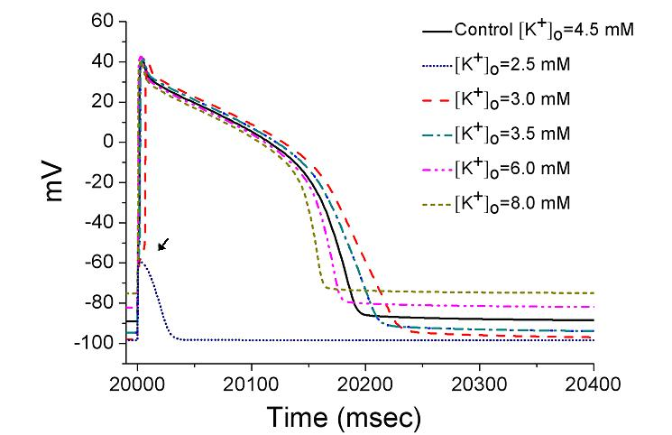

This is the readme.html for the model associated with the paper Sung RJ, Wu JS, Chang HD, Wu SN, Luo CH. Electrophysiological mechanisms of arrhythmogenic propensity in patients with Andersen-Tawil syndrome: a simulation study. Am J Physiol Heart Circ Physiol 2006 [Epub ahead of print]. Abstract: Patients with Andersen-Tawil syndrome (ATS) mostly have mutations on the KCNJ2 gene producing loss of function or dominant-negative suppression of the inward rectifier K(+) channel Kir2.1. However, clinical manifestations of ATS including dysmorphic features, periodic paralysis (hypo-, hyper-, or normokalemic), long QT, and ventricular arrhythmias (VA) are considerably variable. Using a modified dynamic Luo-Rudy simulation model of cardiac ventricular myocyte, we elucidate the mechanisms of VA in ATS. We adopted a kinetic model of KCNJ2 in which channel block by Mg(+2) and spermine was incorporated. In this study, we attempt to examine the effects of KCNJ2 mutations on the ventricular action potential (AP), single-channel Markovian models were reformulated and incorporated into the dynamic Luo-Rudy model for rapidly and slowly delayed rectifying K(+) currents and KCNJ2 channel. During pacing at 1.0 Hz with [K(+)]o at 5.4 mM, a stepwise 10% reduction of Kir2.1 channel conductance progressively prolonged the terminal repolarization phase of AP along with gradual depolarization of the resting membrane potential (RMP). At 90% reduction, early after- depolarizations (EADs) became inducible and RMP was depolarized to -55.0 mV (control: -90.1 mV) followed by emergence of spontaneous action potentials (SAP). Both EADs and SAP were facilitated by a decrease in [K(+)]o and suppressed by increase in [K(+)]o. beta-adrenergic stimulation enhanced delayed after-depolarizations (DADs) and could also facilitate EADs as well as SAP in the setting of low [K(+)]o and reduced Kir2.1 channel conductance. In conclusion, the spectrum of VA in ATS includes (1) triggered activity mediated by EADs and/or DADs, and (2) abnormal automaticity manifested as SAP. These VA can be aggravated by a decrease in [K(+)]o and beta-adrenergic stimulation, and may potentially induce torsades de pointes and cause sudden death. In patients with ATS, the hypokalemic form of periodic paralysis should have the highest propensity to VA especially during physical activities. As extracellular K concentration was changed, the simulation  will make graphs similar to figure 7 in the paper of Sung et al. This C++ code was subbmitted by: Dr. Sheng-Nan Wu and Mr. Han-Dong Chang National Cheng Kung University Medical Center Tainan, 70101, Taiwan snwu@mail.ncku.edu.tw How to use: This code can be compiled and run under linux with commands like g++ -lm ATS-AP.cpp -o ATS-AP ./ATS-AP After a minute or so it generates the 21 column matrix ap that contains time(ms), voltage(mV), etc... (see program).